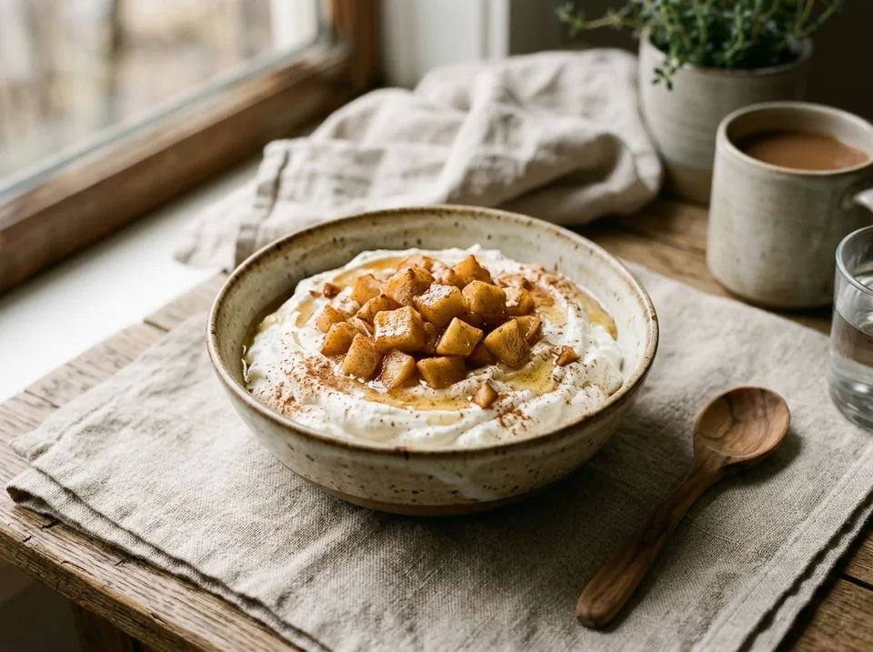

Десерты · около 25 минут
Творожный крем с печёными яблоками
Шелковистый творожный крем с охлаждением в морозилке, тёплыми печёными яблоками из аэрогриля и цветочным мёдом. Высокобелковый проверенный десерт без муки и сахара-песка. 36.4 г белка на порцию!
К ингредиентам
Ингредиенты · 2 порций
- Творог «Першино» 5% — 380 г
- Творог мягкий «Савушкин» 0.1% — 125 г (1 стаканчик)
- Яблоки без сердцевины (кубиками 1.5–2 см) — 300 г (кожуру можно оставить)
- Цветочный мёд — 30 г (сразу в крем при взбивании)
- ФитПарад №10 — 4 стика (по вкусу)
- Корица молотая — щепотка (по желанию)
- Вода питьевая — 10–15 г (только при необходимости)
Пищевая ценность
На 100 г: 113.7 ккал · Б 10.9 г · Ж 3 г · У 10.5 г
Шаг за шагом
Подготовить яблоки
Вымыть яблоки, удалить сердцевины и отвесить 300 г съедобной части. Нарезать аккуратными кубиками размером 1,5–2 см (кожуру можно оставить для аромата и клетчатки).
Выложить на пергамент в аэрогриле
Дно корзины аэрогриля застелить листом пергамента. Выложить яблоки в один слой и по желанию посыпать щепоткой корицы. Масло, сахар и подсластители к яблокам не добавлять.
Запечь на пергаменте (170°C, 12–18 мин)
Запекать в аэрогриле при 170°C примерно 12–18 минут прямо на пергаменте. Через 8–10 минут аккуратно перемешать. Яблоки должны стать мягкими внутри, с сухой аппетитной корочкой без лишней водянистости (усушка убирает лишнюю влагу, концентрируя яблочный вкус).
Взбить крем и охладить в морозилке (10–15 мин)
В глубокой чаше соединить: 380 г творога «Першино» 5%, 125 г мягкого творога «Савушкин» 0.1% (1 стаканчик), все 30 г цветочного мёда и 4 стика ФитПарада №10. Тщательно пробить погружным блендером до абсолютно однородной шелковистой консистенции. Затем поставить чашу с кремом в морозилку на 10–15 минут — крем станет плотным, густым и ледяным, как подтаявшее сливочное мороженое.
Остудить печёные яблоки
Пока крем стабилизируется в морозилке, дать печёным яблокам на пергаменте немного остыть: они должны быть приятно тёплыми, а не горячими.
Соединить яблоки с кремом и перемешать
Достать охлажденный крем из морозилки. Переложить тёплые печёные яблоки прямо в чашу к крему и аккуратно перемешать лопаткой. Тёплые пряные яблочные кубики идеально объединятся с плотным ледяным творожным кремом в гармоничный десерт.
Подача (2 щедрые порции по 335 г)
Разложить готовый десерт по двум креманкам или глубоким пиалам (получается ровно две порции по 335 г). Подавать сразу — идеальный баланс прохладного сливочного крема и тёплых пряных яблок!